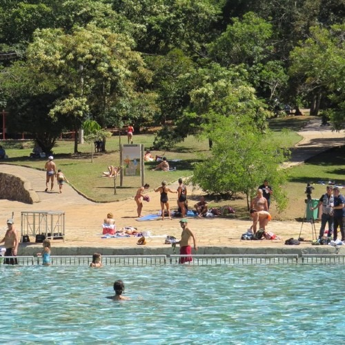

O Parque Nacional de Brasília, também conhecido pelo apelido de Água Mineral,
é uma unidade de conservação brasileira de proteção integral à natureza localizada no noroeste
do Distrito Federal. Situa-se a cerca de dez quilômetros da área central de Brasília.
É um dos parques mais visitados do país
Horários: de terça a domingo das 08:00hrs até 16:00hrs
Endereço: s/n, Sman - Zona Industrial, Brasília - DF, 70635-800
Valor do ingresso: R$ 17,00